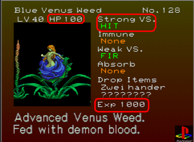

目录
作者注：
里希特跟随阿鲁卡多进入逆城，决心弥补他带来的麻烦。阿鲁卡多情不自禁地想起了300多年前他所爱的人。
在这部小说中，阿鲁卡多既忧郁又戏剧化，里希特是一个混乱的双性恋者，而我几乎完全忽视了玛丽亚。对不起，姑娘。:(
所有的焦虑都与性别认同障碍或跨性别者无关。
译者注：
血之轮回里面里希特他未婚妻和未来小姨子被抓，里希特冲冠一怒为红颜，勇闯恶魔城，我想作者把里希特他未婚妻也忘了，我们就当他跟未婚妻吹了吧。
- A translation of Blood Relations by BlatantlyQueer.
- 译者：zrnp
第一章：等待
Summary:
里希特决心弥补他造成的麻烦。阿鲁卡多等待着。
阿鲁卡多并不想爬上第二座恶魔城。诚然，他并不想做这一切，但他似乎别无选择。如果运气好的话，他会在新的熟悉的地形中找到他母亲的剑。他会让死神为夺走它而付出代价[1]。他跳上倾斜的天花板，穿过倒置的正殿。他听到传送门在他身后传送的声音。他不用看也能闻出是谁，然后他转过身，看着里希特·贝尔蒙特跟在他身后。
“我不是叫你离开这里吗，贝尔蒙特？”他的语气冷冰冰的。
“我没有听从吸血鬼命令的习惯。我要制止那个利用我的人。”阿鲁卡多眯起眼睛看着那个挑衅地站在他面前、肯定地提起自己的人。如果里希特在某种程度上和特雷弗[2]相似的话，他就没那么容易被摆脱。他还是试了。
“前方的路会更加危险。”
“如果像你这样的娘娘腔*(ponce)都能应付得来，我相信我也能应付得来。”里希特得意的笑声清晰可闻且令人恼火。也许这是家学渊源。阿鲁卡多饱含质问之意地向他走过来。
*(ponce这个词还有男同性恋的意思，而且不是绝对的贬义词，非常玄妙。)
“娘娘腔？这就是你对我的看法？我不是刚刚在战斗中打败你了吗？”
“勉强打败我。”这是真的，里希特给他造成了不少麻烦。“我会是一个值得信赖的盟友。我保证。”阿鲁卡多令人不安地盯着他看了一会儿。
“如果你无法跟上我，我会把你丢下。”在继续前进之前，他转过身，披风细微地沙沙作响。里希特在他身后咧嘴一笑。如果他真的是与他的祖先并肩作战的阿鲁卡多，那么他也要与他并肩作战。他要做很多事情。
里希特立马被甩在后面。阿鲁卡多毫不费力地到达那扇门前，那扇门正高高地立在城堡的墙上。他只是朝门的方向跳去，随后他的身体缩小、颜色变深，变成了一只超大号的蝙蝠。他的鞋子一碰到门的边缘，就又变回了人，或者至少是人的模样。他低头看了一眼里希特，然后转身消失在里面。
里希特目瞪口呆。他认为他不应该感到惊讶，鉴于阿鲁卡多是个半吸血鬼，但他不知道如何跟着他飞。他把圣鞭从腰上解下来，稳稳地握住，然后猛地甩鞭，缠住刚刚变成摆设的倒置楼梯的栏杆。他费了相当大的劲才把自己拉上来。这花的时间比他想象的要长，他确信当他把自己甩到窗台上时，阿鲁卡多已经走了，但是他发现他站在黑暗的走廊里等待着。
“我记得你说过你会把我丢下的，”里希特说。阿鲁卡多不喜欢他的语气。半吸血鬼单脚站稳，解开靴带，另一只靴子也如法炮制，把它们递给贝尔蒙特。里希特看上去几乎像是被侮辱了。
“穿上它们。它们可以让你跳得更高。”当他不情愿地接过靴子时，阿鲁卡多换上了另一双靴子。不管怎么说，他更喜欢电梯。“小心点。如果你使用它们的时候离天花板太近，你的贝尔蒙特脑袋不会保护你。”里希特皱起眉头，看着阿鲁卡多穿好靴子。[3]
“你刚才是不是叫我笨蛋（thick-headed）？”这几乎是一种幽默。阿鲁卡多只是在喉咙里发出轻微的声音，几乎不承认自己说的话，然后转身继续向前。
注：
[1].游戏一开始，死神抢走了阿鲁卡多的装备，一身神装变白板。
[2].特雷弗就是恶魔城传说里跟阿鲁卡多一起打亲爹的拉尔夫·C·贝尔蒙特
[3].阿鲁卡多高跳的时候会把脚踩在天花板上倒过来站，而里希特就不一样，他会一头撞上去，关键是他的头还很铁，能撞破几面墙的那种铁。
第二章：进展
Summary:
阿鲁卡多和里希特穿过城堡，来到了斗技场。
里希特的速度比阿鲁卡多慢，但也慢不了多少。我没有时间带着他，这个想法在阿鲁卡多的脑海里闪过好几次，但他从来没有付诸行动、丢下里希特。毕竟贝尔蒙特是一个有价值的盟友，有他在，在城堡里转悠要容易得多。
如果有人问起，阿鲁卡多不会承认他把贝尔蒙特留在身边是出于感情上的原因，但他仍然注意到自己始终凝视着里希特，只在被发现之前迅速移开视线。家族成员之间的相似性惊人且难以忽视。这位半吸血鬼仍然感到内心作痛，仿佛300年的时光一点都没有治愈情伤。事实也的确如此。
他们最终到达了外墙，遇到了里希特够不到的高台，天花板太低，无法利用重力靴。里希特不想寻求帮助，他也没必要这么做。阿鲁卡多一言不发地转向他，手指并拢，向膝盖微微弯曲准备跳起的人伸出手并放低。贝尔蒙特犹豫了一下。他完全不能理解为什么阿鲁卡多在足够快、而且可能也足够强大到可以稳步前进的情况下，还把自己留在身边。
“我们没有一整天的时间浪费，贝尔蒙特。”里希特走向那个人，踏上他的手*，抓住阿鲁卡多的肩膀站稳。阿鲁卡多在被触碰时畏缩了一下，然后轻松地把里希特抛了上去。他不记得上一次有人不带杀意地触碰他是什么时候了。他跳起来跟在里希特后面，他的披风[1]带着他走完了剩下的距离。
*(我一开始翻“step into his hand”的时候十分疑惑，多看了几遍才发现原来里希特是踩着阿鲁卡多的手、被阿鲁卡多扔上去的，我：？？？)
里希特并不完全确定如何看待阿鲁卡多。他似乎始终保持着雕塑般的镇静，即使在被敌人打得满地翻滚的情况下。他以近乎外科手术般的精确度击倒怪物，他移动时有一种致命的优雅，也许是从他父亲那里继承来的。然而，当他们一层又一层地穿过城堡时，这个奇怪而果敢的人会在这些区域之间停下来，以确保贝尔蒙特不需要休息或食物。对于一个曾经威胁要丢下他不管的人来说，这相当令人惊讶。作为对微妙善意的回报，里希特非常认真地对待手头的任务。阿鲁卡多是一个剑法娴熟、力量强大的剑客，里希特则是家族里最强的猎人。他们彼此交托后背，战斗时配合默契，得知这一点后，他感受到非常舒适。
不久之后，他们两人到达了斗技场，推过几十个牛头人和狼人走进了主竞技场。在这宏伟壮丽的空间中央，立着三口躺有骸骨的棺材。这个房间里充满了邪恶能量，与大战[2]之前降临的能量一模一样。棺材的盖子突然砰地一声合上，里希特和阿鲁卡多跳了起来，身体猛地一颤。过了一会儿，棺材盖子又打开了，古兰特*第一个棺材里走了出来，弯腰抓着一把刀，就像阿鲁卡多记忆中的那样。他僵住了，里希特能感觉到他退缩了。塞珐*从最远的棺材里走了出来，她的脸扭曲而阴沉。让阿鲁卡多更为恐惧的是，特雷弗*[3]从中间的棺材里走了出来。
[1].大概是二段跳？跳的时候阿鲁卡多的披风会变成类似翅膀的形状。
[2].进入逆城之前，沙夫特操纵里希特打架的那场BOSS战。
[3].古兰特、塞珐和特雷弗是《恶魔城传说》里的角色，都是当年跟阿鲁卡多一起打德古拉的小伙伴，这里大概是说沙夫特还操纵了他的小伙伴们的尸体。
第三章：圆形竞技场
Summary:
阿鲁卡多看到了一个亡灵。
特雷弗从棺材里走了出来，手里拿着他亲手传授自己鞭法时用的鞭子。阿鲁卡多觉得自己的血变得冰冷，比平时更冷。沙夫特会不会走得太深入，以至于闯进贝尔蒙特的坟墓？这真的是几个世纪以来特雷弗·贝尔蒙特第一次站在他面前吗？
“你想念我吗，阿德里安（Adrian）[1]？”死去的贝尔蒙特手里挥舞着鞭子、使末梢旋转，每一次挥动都带着力量，而阿鲁卡多除了盯着他看什么也做不了。塞珐向天空飘去，古兰特爬上了墙。里希特非常清楚他们曾是什么人。他握好自己的鞭子，瞄准那个冒牌古兰特，把他从天花板上打了下来，这一举动引起了塞珐的注意。
特雷弗用鞭子抽打着阿鲁卡多，把金属末端狠狠地扎进他的腹部，然后把他打倒在地。半吸血鬼痛苦地捂着腹部，血不断地从喉咙涌出，呛住了他的嘴。
“你在干什么？！”里希特大声喊道，轻松地解决了古兰特，然后躲在塞珐的一个错误施放的咒语之下。阿鲁卡多没有回答。挫败、愤怒和痛苦交替浮现，里希特从未见过阿鲁卡多脸上有那么多表情。他当然从未见过阿鲁卡多恐惧的模样。人类犹豫地说着他听不懂的话，然后又朝他大喊。“阿鲁卡多！”
“来啊，跟我战斗！”当特雷弗再次挥舞鞭子的时候，阿鲁卡多在最后一刹那躲到了盾牌后面，金铁相击之声回响。他能听到特雷弗走近了。他听见他拔出刀来。“出来和我战斗，小男孩。”
‘小男孩’？以前也有人这样称呼他，比如藏在正城里的魅魔。他知道他不是特雷弗，但‘杀死特雷弗’的想法还是令他痛苦。他用自己的剑击飞了特雷弗的剑，并迅速与他拉开距离。他以前和特雷弗打过一架，并且和他并肩作战过无数次。他知道如果贝尔蒙特离他足够远的话，他会将武器换回鞭子。
接下来，特雷弗的鞭子打落了他手中的盾牌，就在他准备再次击打盾牌的时候，另一根鞭子抽了过来，缠绕在特雷弗的手腕上，把武器缠在一起。里希特使劲后退，解除了冒牌祖先的武装，同时也使自己空门大开。里希特再次向阿鲁卡多大喊，声音听起来很绝望，当塞珐的一个冰咒从背后击中他，并把他的皮肤冻伤时，他痛苦地大叫起来。
阿鲁卡多做了一个决定，他选择了里希特而不是特雷弗。当正牌贝尔蒙特抓住了特雷弗的手时，他向前冲去。阿鲁卡多把他放倒在地，冒牌特雷弗发出了一声怪异的尖叫，然后消失在绿色的火焰中，躯体四分五裂。他很快专注对付塞珐，把里希特推开，在她的咒语的缝隙之间跳过去，把她也击倒了。
塞珐的绿色火焰刚熄灭，阿鲁卡多就感到眩晕。他正要转身去确认里希特是否安好，这时他突然单膝跪地。他的腹部和眼睛火烧一样疼痛，他在哭。他不想哭。他用戴着手套的手捂住嘴，抑制住抽泣。他听见里希特走到他身后。
“阿鲁卡多？”里希特关切地把一只手放在阿鲁卡多的肩膀上，阿鲁卡多猛地躲开。
“放开我——”他说，但他的声音使他的话缺乏说服力。他试着站起来，然后又一次瘫倒在地，紧紧捂住腹部，疼痛难忍。圣鞭“Vampire Killer”，不管是不是真品，都是一个可怕的武器。
“让我来帮忙，你需要什么？”里希特坚持道。
“我需要一口棺材，”阿鲁卡多哽咽着，里希特用自己的胳膊搂住他的腰，把他的胳膊搭在自己的肩膀上。
幸运的是，棺屋离这里不远，里希特毫不费力地把他送到了那里。他把棺材盖子推到地板上，然后帮助半吸血鬼躺入棺材，半吸血鬼勉为其难地接受了帮助。他靠在箱子坚硬的木头上休息，对着里希特眨眨眼。
“贝尔蒙特……”
“嘿，别说话。睡吧，你需要养伤。你醒的时候我会在你身边。”阿鲁卡多还没来得及抗议，里希特就把石头盖子拉回棺材上，把他关在了黑暗的空间里。阿鲁卡多没有精力、也不想去抗议，只是让步般闭上眼睛。
[1].阿德里安是阿鲁卡多原本的名字，只有最亲密的人才被允许这么称呼他，以前好像只有特雷弗？（恶魔城传说没玩过，也没云通关过），以后还会多个里希特。
第四章：梦境
Summary:
阿鲁卡多睡着了，他醒来的时候发现里希特在他身边。
阿鲁卡多的睡眠伴随着不安的梦。很难分辨什么是梦，什么是记忆，但他看到了朋友们的面孔。
古兰特和特雷弗亲密无间；他们的友谊在大战结束后持续了很长时间，阿鲁卡多的确羡慕他们的亲密关系，但远没有他羡慕塞珐那么多。塞珐是一个强大而美丽的女人。她聪明善良，有一头长长的红发、一双温柔的眼睛。阿鲁卡多像爱姐妹一样爱她，特雷弗也爱她。
特雷弗拥有一种天生的力量。他是那种能鼓舞你战斗的人，他毅然起身，坚决前进，为那些驱逐他家人的人而战[1]。特雷弗并不是为了瓦拉几亚人民的赞美和承认而与德古拉战斗，他之所以为他们战斗，是因为这是正确的义举。
阿鲁卡多非常爱他，他是这个世界上唯一一个被允许叫他阿德里安的人。
他的其他三个队友曾试图说服阿鲁卡多在战斗结束后留在他们身边，答应在他们身边留给他一席之地，但他还是离开了。在他们打败了抚养他长大的父亲之后,他被罪恶感击垮，而他的父亲至今仍在为母亲哀悼。他刚刚失去父亲、成为一个孤儿，他想要逃避。他毕竟是一个危险的生物，一个不合教义的结合的产物，一个拥有真正邪恶血统的怪物。他不属于凡人。
当特雷弗和塞珐宣布订婚时，阿鲁卡多的心被分成了两瓣：一瓣为他两个最亲密的朋友的爱和幸福而快乐，一瓣为他深爱的人永远不会回应他的爱意而感到痛苦。他在那里待到他们婚礼结束，并在离开之前祝愿他们一切顺利。他陷入沉眠，再也没有见过他们。
火焰突然切断了他的梦境。他看到他的母亲从火焰中站了起来，尖叫着，哭喊着，乞求着，为她自己和全人类乞求怜悯。这段记忆在他的脑海里仍然清晰可见。
丽莎*化作灰烬，他父亲从即将熄灭的火焰中站了起来，在一片火海中怒气冲冲地重新点燃了火刑柱。他的声音十分低沉。
（*丽莎是阿鲁卡多的母亲。）
“你真是个可悲的儿子！”
里希特被身边的一声巨响从睡梦中惊醒。有什么东西从棺材里面砰地一声打在棺材盖上，接着是几句含混不清的话语。
“……一切都还好吧？”贝尔蒙特大声喊道。他沉默了一会儿，然后阿鲁卡多从里面推开盖子，让它掉到地板上蹦了几下。他坐了起来，揉着前额。他惊醒之后一头撞在在棺材盖上，磕破了额头。“你感觉怎么样？”阿鲁卡多的眼睛盯着里希特看了一会儿，然后又看向别处。
“好多了，”他说。他的伤口几乎完全不疼了。他还没有从棺材里走出来，坐在那里整理了一会儿思绪。里希特迅速穿过棺屋，将背靠在棺材的一侧。几分钟后他开口说话。
“感觉怎么样？”阿鲁卡多疑惑地看着他。“与特雷弗·贝尔蒙特并肩作战相比。”阿鲁卡多回应了一声叹息；他似乎无法摆脱这个人，即使他已经死了几个世纪。
“他战斗经验丰富，力量强大。”他不确定里希特想听什么。当他捕捉到到里希特的目光时，里希特正在凝视自己。与阿鲁卡多不同的是，他没有试图掩盖这一点。“……他和你很像，但你毫无疑问是模仿他的招式。”
“不过，他本人是个什么样的人呢？”这是阿鲁卡多最不想谈论的事情，但他理解里希特的好奇心。他深深地吸了口气。
“他非常不拘小节*，但他是一个真正的好心人。他热心帮助别人。”特雷弗的微笑使他非常快乐，但他没有说这些细节。里希特也许谈论到使阿鲁卡多痛苦的记忆，他私下怀疑其原因。他好心地改变了话题。
（*原文是rough，但我个人以为不拘小节比较褒义。）
“那么，为什么是棺材呢？”贝尔蒙特敲了敲装饰华丽的箱子的一侧。这似乎是一个非常戏剧性的适合小睡的地方。
“为了阻断所有的光线。”他知道吸血鬼睡在棺材里是戏剧性的自然规律。“这比睡在杂物间里高级多了，你不觉得吗？”里希特咧嘴一笑，对阿鲁卡多如坚冰般的神情融化而感到高兴。
“这当然是非常戏剧性的。你准备好行动了吗？”里希特站了起来，阿鲁卡多同样起身。
“是的。你休息够了吗？”半吸血鬼花了点时间整理他的衣服。
“足够了。”他伸出一只手帮助阿鲁卡多从棺材里出来。脸色苍白的男人看了一会伸出的手，然后握住它，走了出去。
“那我们出发吧。”
Notes:
[1].贝尔蒙特家族因为强大的力量而被人民排斥，直到拉尔夫打败德古拉拯救世界，贝尔蒙特家族才开始被人接受。（详见百度百科的“恶魔城传说”词条）
第五章：放血
Summary:
阿鲁卡多的血量下降到5；里希特提供帮助。
Notes:
本章有吸血内容。
谢天谢地，阿鲁卡多走进死胡同房间时心里想着。地板中央放着一套盔甲；他丢失的盔甲。他迅速脱下披风和外套。里希特跟在他后面，看到阿鲁卡多脱衣服，他停了下来。
“嗯？”他觉得好像撞见了什么。阿鲁卡多转头越过肩膀瞥了一眼里希特，里希特瞪着他。
“过来，”他轻声命令道，里希特走近了一些。他笨拙地站在阿鲁卡多对面，那人解开了背心上的扣子。令人惊讶的是，在多层面料和盔甲之下，这位半吸血鬼显得非常柔软，身材高而瘦。里希特想知道阿鲁卡多的外套里是否有垫肩，但当那个苍白的男人递出他惯穿的盔甲时，这个想法被打断了。“拿着，这件盔甲比你现在穿着的更坚固。”
里希特呆呆地站在那里，手里拿着盔甲。没有了那些花哨的装饰，阿鲁卡多看起来是如此不同。他浅色的头发披散在肩上，头发是长长的卷发。头发确实过于浓密，但很适合他。他在背心下面穿的白领衬衫几乎和他的皮肤一样亮，在他穿上他的盔甲之前的一段时间，阿鲁卡多看起来像一个站在他面前的苍白幽灵。里希特把目光移开，扯下自己的外套，扔掉旧盔甲，换上新的。当他抬起头来收紧新盔甲时，他对上了阿鲁卡多的眼睛。那个半吸血鬼很快避开了他的目光，但他盯着里希特看的样子已经被发现了，他脸色苍白，无法掩饰脸红。他转过身去，忙着穿盔甲，然后又把披风披了回来。里希特暗自笑了笑，穿上了自己的夹克。
阿鲁卡多的脸红使他感到好奇。
“玛丽亚对你有意思，”里希特说。在遇到阿鲁卡多之前，他并没有与她相处多久，但是他猜到了很多。玛丽亚并不是一个善于掩饰的人。阿鲁卡多向他的方向投去困惑的目光。“……之前在正城的那个女人？”
“是的，我记得。”当然了，他只在城堡里碰到过她几次。她看起来很友善。里希特充满期待地看着他。半吸血鬼转过身，朝他们来的方向回去了。“我对女人不感兴趣。”
里希特咧嘴一笑，忠诚地跟在他后面。他对这个回答非常满意。
–
阿鲁卡多经常受伤。在洞穴深处，两个人需要停下来喘口气。半吸血鬼靠着冰冷的洞穴墙壁坐了下来，猛地从肩膀上拽出了带刺的子弹。当一株蓝色妖花[1]在他面前开花的时候，他为里希特挡下了伤害。他可以承受比里希特更大的伤害，而且很难抵抗保护他的本能，但他已经受了重伤。他非常虚弱。他的肋骨断裂、持盾的手骨裂。疼痛在他的皮肤下跳动着，燃烧着。
“我真的需要你不要再为我挡子弹了。你没事吧？”里希特跪在他旁边。很明显阿鲁卡多有事，但是他不确定他能做什么。
“不……恐怕我已经没剩多少药了。”
“我用了最后一剂药，不是吗？”
“我让你用了最后一剂药，”阿鲁卡多纠正道。里希特看起来总是如此敏锐和肆意，但他知道，贝尔蒙特为把阿鲁卡多和玛丽亚拖入险境而感到内疚。就像是里希特并不是被自己的意志控制，这一切都不是他的错。阿鲁卡多也不想让他认为自己的粗心大意是自己的错。阿鲁卡多在脑子里想了一遍，他们并没有太多选择。
“你会用咒语吗？灵魂窃取[2]？”里希特又站了起来，来回踱步。他思考着他们离最近的棺屋有多远，在去的路上他们要面对多少沙夫特的走狗。他不确定他们是否能安全抵达棺屋。
“如果我要施展灵魂窃取 ，你肯定也会死。”阿鲁卡多垂眸，一只手按住肋骨，试图减轻疼痛。
“那么……血液呢？”里希特在阿鲁卡多身前停下来，低头看着他。那人透过他浅色的睫毛瞪着他。
“绝对不行。”
“阿鲁卡多，我不能让你死在我面前，也不能等你沉睡一年。”
“你让我做的事太野蛮了。”
“如果它能让你活下去，我想我能应付。”他与阿鲁卡多进行了强烈的眼神交流，并坚持自己的想法。半吸血鬼先权衡了一下结果，然后轻轻地叹了口气。
“……好吧。”
“我该怎么做？”里希特显得很急切。这让阿鲁卡多很紧张。
“过来，坐在我旁边。”阿鲁卡多从口袋里掏出一块干净的白手帕，脱下手套。“我没带放血工具……”他根本没想到恶魔城里会有人类，他认为自己不需要它。里希特重重地坐在他身边。
“放血工具？”
“你知道，我不会到处咬人的喉咙。”他的母亲教他如何安全地放血。毕竟，她曾经是个医生。“不幸的是，我现在必须这样做。我需要接近你的脖子。”他只是伸手去脱里希特的衣服就觉得不舒服。
“我想会很痛？”里希特解开了他衬衫上的几个扣子，把那个扣子和他的外套都解了下来，肩上的布料也被扯成了一团。他迅速走近，微微面向阿鲁卡多。
“是的，就疼一会儿。”他把里希特的长发往后拢。他已经很久没有喝人血了，自从第一次打倒他父亲以后就没有喝过了。特雷弗和塞珐都向他提供过血。
里希特就坐在很近的地方，他必须这样做，但这仍然让阿鲁卡多犹豫不决。他一般忽视里希特的血腥味，但他们之间距离很近，他能闻到的只有血腥味。他靠得很近，换了一个足够舒服的姿势，而不是坐在对方的膝盖上。当他靠近贝尔蒙特的脖子时，他能听到贝尔蒙特的心怦怦直跳，但他却安静地坐着。
“你还可以改变主意，”阿鲁卡多低声说，当他的温暖的呼吸在里希特的喉咙上幽灵般地拂过时，他很难控制住不颤抖。
“快点咬我啊，you ponce*。”他的声音里没有一丝恶意，他耐心地坐着，一动不动。阿鲁卡多伸手扶住里希特的后脑勺，将他的嘴唇贴在里希特的脖子上，然后张开嘴，咬下去。
*(ponce这个词有娘娘腔、男同性恋等含义，英国文化博大精深)
里希特因突如其来的剧烈疼痛发出嘶嘶声，攥紧阿鲁卡多的披风。疼痛很快就消失了，阿鲁卡多拔出了他的尖牙，然后闭上嘴，深深地吮吸了一口。血液充斥着阿鲁卡多的感官，他感到身周全是贝尔蒙特的气息，突然之间，他如此渴望触摸和亲呢。里希特充满了内啡肽，他的呼吸变得深沉而沉重。阿鲁卡多任由里希特抱着自己，一只胳膊搂住自己的腰，头愉快地转动着，发出轻柔而宁静的声音。
阿鲁卡多让自己停止饮血，他不是为了杀人而饮血。他用舌头舔舐伤口，让里希特在他的胳膊上颤抖。阿鲁卡多抚摸着贝尔蒙特的长发，安抚他小小的颤抖，同时等待着流血的速度慢下来直到伤口结痂。阿鲁卡多没有松手，紧紧抱住里希特温暖的身体，他的身体慢慢地自我修复，他的肋骨断裂处回到原位，他的疼痛慢慢消失。
他等待着里希特大脑里的内啡肽和迷茫的感觉慢慢消失。他等着吸血鬼猎人厌恶地把他推开，但他从不这样做。相反，里希特的呼吸变慢了，他把头靠在阿鲁卡多的肩膀和脖子上，阿鲁卡多的脸仍然紧贴着他的肩膀和脖子。作为贝尔蒙特家族的人，他闻起来还不错。
过了一会儿，他直起身体，看着里希特的脸。“你做得很好。你没事吧？”阿鲁卡多满嘴是血，里希特对他眨了眨眼睛，微微点了点头。他的脸涨得通红，看上去很茫然。阿鲁卡多对上里希特的目光，直到感到自己的脸不自然地升温。他一边用手帕擦嘴，一边翻口袋，找到一个苹果，塞进里希特的手里。“有空的时候吃这个。你需要恢复体力。我们在这儿休息一会儿。”他用手帕轻轻地擦拭里希特的新伤口，然后迅速帮他扣上衬衫的扣子。当阿鲁卡多靠在洞壁上坐下时，里希特微微倾斜着身子，把头靠在他的肩膀上。里希特以为他会被推开，或者阿鲁卡多因尴尬而坐立不安，但他两者都没有。过了一会儿，他咬了一口苹果，嚼了几下吞咽下去。
“我认为这不是野蛮的行为。”
“嗯，那你认为这是什么呢？”
“很亲密，感觉还不错。”
阿鲁卡多的脸变得通红，他很高兴贝尔蒙特看不见他的脸。
Notes:
[1].蓝色妖花长这样：
[2].灵魂窃取：吸取全屏幕敌人的灵魂恢复生命值。
第六章：传家宝
Summary:
阿鲁卡多找到了他母亲的剑。
在去地下墓穴的路上，阿鲁卡多在一个死胡同里发现了他母亲的剑。他希望他们能在面对死神之前找到它；如果能用死神偷来的剑把他砍倒，那会是多么令人难以置信的满足。当他看到剑时，他如释重负地冲向剑。他一碰到剑，剑刃就闪闪发光，他把剑举在胸前。里希特走到他身后，等待阿鲁卡多站起来，把剑佩在腰间。
“那是你母亲的剑吗？”阿鲁卡多转过身来，向他点点头。
“是的……这是个古老的传家宝。”他把手放在剑柄上。感觉它就像是属于他的一部分。
“我很高兴你找到了它。我知道死神并不知道它的位置。”
“我也这么认为。”他为此感到很紧张，但又不愿意表现出来。里希特无论如何都能看出来。他一直微妙地徘徊在阿鲁卡多附近，注视着他；当那个半吸血鬼喝他血的时候，他发现自己被他吸引，他的内心有些激动。他希望阿鲁卡多也对他有感觉。
阿鲁卡多很漂亮。他们是一起战斗的兄弟，但是他们已经一起在恶魔城穿梭好几天了，他不禁感到他们很亲近。但他还想与阿鲁卡多更亲近一些。每当阿鲁卡多躺在棺材里的时候，他的思绪就会回到被吸血的感觉上，只是自责没有趁此机会休息一会儿。当阿鲁卡多转身离开房间时，里希特大声说道。
(哈哈哈里猴子光顾着看美人连觉都不睡)
“阿鲁卡多。”阿鲁卡多停下脚步，转身看着他。“我想她会为你感到骄傲的。”
“ ……什么？”他维持不住镇静的表象。
“你的母亲。我想她会为你感到骄傲的。”他知道这不关他的事。他什么都不该说的。他不知道阿鲁卡多是生气还是只是……伤心。半吸血鬼用手抓住剑柄，眼睛盯着地板。里希特觉得自己像个白痴，像个混蛋。
“对不起，”他说，然后走向那个人。他伸出手去碰了碰他的胳膊。“我什么都不该说的。”
“不。”阿鲁卡多的声音穿透了紧张的气氛。他看向贝尔蒙特的眼睛。他的表情不是愤怒，不，如果有表情的话，他看起来亦喜亦悲，看不出究竟是高兴还是悲伤。“谢谢，贝尔蒙特。”他本应愤怒地指责里希特不尊重已故的丽莎·特普斯，但这正是他想听到的话。
在某种程度上，阿鲁卡多知道她会为自己感到骄傲，但她已经去世，无法告诉他这一点。几个星期以来，他一直在绘制地图，仔细搜寻正城和逆城，决心为了她再阻止他父亲一次。为了她，也为了所有像她一样的人，她教他去爱的那些人。要是她也能向他父亲展示如何爱他们就好了。
他凝视着里希特，他是如此直白地关心他，如此美丽。他一动不动地坐着，任由他吸血，也不会像特雷弗那样厌恶地退缩，因为他不是特雷弗。他是个更好的人。
(美丽的里希特……啊这……多半是历代记重制版的吧)
里希特疑惑地抬头看着他。他看不清半吸血鬼盯着他看的样子。当阿鲁卡多抓住他的一只手并把它举到嘴边时，他感到非常惊讶。他在戴着手套的指关节上轻轻地吻了一下。
“谢谢你。”
第七章：棺屋
Summary:
里希特和阿鲁卡多更亲密了。
Notes:
这一章包含了露骨的性描写，无保护的阴道性交，和吸血。
两人在城堡深处的棺屋里安顿下来。他们离恶魔城的中心已经很近了，沙夫特无疑正在那里等着他们。他们已经准备好了，把所有的钱都花在了药品和补给品上，这些东西完全值得他们探索恶魔城的每一条路。
“在继续前进之前，我们应该确保休息充分。如果我们来不及阻止沙夫特，我们可能得和我父亲交手了。”阿鲁卡多打开房间中央的棺材盖。里希特的目光紧紧地盯着他。“我不确定他会有多强大。”
“阿鲁卡多。”里希特走到他身后。当半吸血鬼转身面向他时，他发现他们站得很近。“我们都和德古拉交过手，但是……我们有可能无法活着出去。”阿鲁卡多低头看着他。
“是的。”他们总有失败的可能，但是不去尝试是不可能成功的。
“如果我不能在这场战斗中活下来，我不想带着遗憾死去。”里希特走得更近了，他们的胸膛几乎碰到了一起。
“你想说什么，贝尔蒙特？”他知道他有感觉，但他不再是一个按照自己感觉行事的人了。里希特凝视着他，拽下手套，漫不经心地把它们放在地板上。他抬起手，捧住阿鲁卡多的脸。他的皮肤摸起来很凉。脸色苍白的人把脸埋在他的手中。
“别这样称呼我。”他用拇指轻轻抚摸了一下阿鲁卡多的脸颊。“我叫里希特。”他们没有相互称呼教名，他感觉很奇怪。
“里希特，”他轻声说，意识到自己以前从未大声称呼过这个名字。里希特笑了。
“你的口音听起来不错。”阿鲁卡多抬起手，握住里希特的手腕，捂住自己的脸。“我可以吻你吗，阿鲁卡多？”吸血鬼猎人问道，一如既往的大胆。
“阿德里安，”他平静地说，“称呼我阿德里安。”里希特的笑容越来越灿烂。
“阿德里安。”半吸血鬼深吸一口气，又重重地叹气。“你没有回答我的问题。”阿德里安没有回答，而是靠近里希特的嘴唇，动作温和而纯洁。很快这就不是一个纯洁的吻了，里希特将对方的脸往自己的方向拉。阿德里安的嘴唇比里希特的稍微冰凉一点，他嘴唇的触感如同天堂一般。贝尔蒙特向后退去，看着他的眼睛。
“我想这么做有相当一段时间了，”人类平静地说。
“我也是，”如果他坦率一点的话。里希特抓住阿德里安的手，扯下他的黑手套。
“我希望我不会过于冒昧，但你穿了很多衣服。”他似乎很喜欢穿很多层衣服。
“我总是穿这么多衣服。”
“你应该少穿点。”
“现在？”他听起来很开心。
“为什么不呢？”里希特解开了阿鲁卡多披风的链子，这戏剧性的物品简直是块深色的布，舒展着飘落到地上。“我们又不是在和谁打架。我们在这里很安全。”阿德里安对他微笑，一个真诚的微笑，然后脱下他的外套。他吻了吻里希特，把他的外套——绝对有垫肩——扔向他身后的棺材，看都没看上面的破损。他正忙着品尝里希特的嘴，吮吸他的舌头。他慢慢地、有条不紊地动作，好像第一次接吻似的。他把手从里希特的脖子上滑过，然后顺着肩膀上滑下来，脱掉了他的夹克。里希特不耐烦地咬着阿德里安的下唇，一松开手，就抓着对方的衣服。
里希特想靠得更近一些，于是他用最快速度脱下了阿德里安的背心。背心掉在地上，半吸血鬼用力拉着里希特的盔甲*皮带，解开了结，把它拉开。里希特摸索着阿德里安盔甲上系带*。
(里希特穿的是mail，由重叠的小金属片组成，阿鲁卡多穿的是armor，由整块金属板构成。)
“该死，”他咒骂着，阿德里安轻轻地笑了笑，自己伸手解开了绳结。里希特猛地拉开了硌人的盔甲，然后用双臂搂住对方，把他拉近。
阿德里安把手放在里希特的头发上，捧住他的后脑勺，就像他吸里希特的血那样。他的另一只手抱着他的后背，把他们紧紧地贴在一起。阿德里安已经很久没有和别人拥抱了。他很高兴这个人是里希特。
里希特面色潮红，呼吸急促。他猛地拉阿德里安的宽领带，解开蝴蝶结，就像打开一件礼物。他得意地笑了。他用拳头攥住阿德里安衬衫的褶边，脸色苍白的男人抓住了他的手。
“不要撕开它，你这个野蛮人。”他用灵巧的手迅速解开纽扣。里希特尽可能快地把手放在阿德里安身上，把他的衬衫推开。半吸血鬼双手顺着里希特的前襟，很快地解下了纽扣。他不知道自己是如何如此迅速地解开它们的，但他对此很感激。他越早占有对方越好。他双手抚摸着阿德里安胸口上那块深色的伤疤，并在那里亲吻了几下。阿德里安任由自己被对方拉到怀里抱住并亲吻。在长时间感到自己是不被需要之后，被如此迫切地索求的感觉很好。他把里希特的领子推到一边，弯下身子，亲吻并含住颈部那两处正在愈合的伤口。里希特轻轻地呻吟着，把髋部贴在阿德里安身上，把勃起抵在他的大腿上。他把手放在阿德里安的头发上，把他按在自己的喉咙上。
“咬我吧，”他屏住呼吸说。阿德里安用牙齿咬住他的皮肤。
“你确定吗？”他的声音在耳边回响，低沉而平稳。里希特的手紧紧地抓着他的头发。
“是的。请你这么做。”阿德里安慢得令人沮丧，他沿着里希特的脖子移动牙齿。里希特把他的大腿顶着对方的胯部。他发出一阵轻柔的声音，在咬下去之前舔了舔一小块没有破损的皮肤。阿德里安的手微微颤抖，他不需要血，但他想要吸血，想要拔出他的尖牙，然后换上嘴唇和舌头。
“哦——哦，上帝啊……”吸血鬼猎人的眼皮颤动着，紧紧抓住阿德里安。那个半吸血鬼没吸多少，只是吞了一口，然后挣扎着离开了。他低声轻笑，从他胸膛里发出深沉的震动，他对里希特咧嘴笑了笑。他的嘴里满是血。
“不，没有上帝。”至少在他父亲的城堡里没有。他抚摸着里希特的头发，把长长的刘海往后梳。他看着另一个人茫然的眼睛。“只有我。”他再次靠近里希特，舔着滚落贝尔蒙特胸口的血流，用舌头慢慢地舔着伤口，直到伤口愈合。里希特慢慢地、不假思索地把髋部贴在阿德里安的大腿上。他一有机会就把对方拉进了一个充满血腥味的吻中。他不在乎对方是否还是血淋淋的，他需要与他更亲近些。
“啊，也许……”阿德里安让里希特再次占有他那血迹斑斑的嘴。“也许我们应该找个地方坐坐。”里希特瞥了一眼阿德里安身后的棺材，轻轻地把他推向那里。
“坐进去，”他喃喃自语，阿鲁卡多脱下他的高筒靴，明显地缩了几英寸，然后走回华丽的盒子。他坐在棺材里耐心地等待着，看着里希特笨拙地跳着，脱下自己的靴子。贝尔蒙特跟在他身后爬进棺材，把他的胯部挤进阿德里安的两腿之间。当里希特引导他躺下时，半吸血鬼心满意足地叹了口气。里希特压在他身上的感觉真好，他把他拉下来再次吻他。
里希特的一只手向下探去，抚摸着阿德里安的胸部和腹部，然后贪婪地架起。他停顿了一下，又摸了对方几次，然后看起来有点困惑。他看向阿德里安的眼睛，发现阿德里安正密切注视着自己的反应。
“我可以把它们脱下来吗？”里希特用几根手指勾住阿德里安的裤腰带，阿德里安点点头，他的表情回到了先前的静对一切苦难的状态*。里希特解开裤子的扣子，把它们往下拉，当他发现阿德里安的金色阴毛里藏着一个女性阴户时，他停了下来。“噢。”
(his face back to it’s stoic baseline.“stoic baseline”我实在是不会翻了，只好随便瞎翻。)
“这会有问题吗？”阿德里安的声音小心翼翼，慎重而平缓。里希特微笑着，弯下腰吻住他的嘴唇。
“不，不。一点也不。”这只是跟他期待的不一样。虽然……“但是，你能怀孕吗？”
“不……”他很感激这是里希特的关注重点。“我也不会感染大多数人类疾病，但是。”他粗暴地抓住里希特的下巴，做出眼神交流的姿势。他那双金色的眼睛非常严肃。“如果你对此有什么意见，在我们开始之前一定要告诉我。”里希特咧嘴一笑，把阿德里安的手从下巴上移开，亲了亲他的指关节。
“我没有意见，我发誓。”阿德里安的表情再次变得温和起来，他把手向下移，从裤子里释放出里希特的阴茎。贝尔蒙特安静地喘着气。
“在这种情况下，我认为这些衣服依旧是个阻碍。”阿德里安一说出这句话，贝尔蒙特就笨拙地从自己的裤子里挣扎出来，然后拽着他的裤子完成了剩下的步骤。阿德里安嘲笑里希特的匆忙；以坦诚，饱满，真实的笑。这是里希特第一次听到他真正的笑声，他低头看着阿德里安。阿德里安对他眨了眨眼睛。“什么？”里希特只是摇摇头，再次紧靠在他身上，不停地亲吻，用手指抚摸着他的阴毛。阿德里安在里希特的嘴里叹了口气，他的手指滑过他的阴唇，发现他已经湿透了。他用拇指在阴蒂上蹭来蹭去，当阿德里安把指甲嵌进自己的髋部喘息时，他高兴极了。
他似乎一直处于被支配状态，所以阿德里安抓住了里希特夹在他们之间的阴茎，给了他几下深情的抚摸。这时轮到里希特呻吟起来，把他的阴茎挺进对方手里。
“阿鲁卡多……阿德里安，我想操你。”里希特的热情和厚颜无耻迷住了阿德里安，他用双腿缠住他的腰，把他拉近。
“那就操我吧。”
里希特慢慢地操进阿德里安的身体，不再急促，他们两人一起叹了口气，一起呼吸。阿德里安弓起腰，缓慢又甜蜜地吻了吻里希特的脸。然后里希特将阴茎抽出一截，再次插入，开始有节奏的稳定抽插，但这并没有持续很长时间。
“更多，求你，”阿德里安呻吟道，作为回报，里希特更用力地干了他。“给我更多，更多，”他要求道，然后里希特又加了些力气操他，直到他抓住棺材的边缘作为施力点，阿德里安在他身下扭动得一塌糊涂。看着这位平时沉着冷静、坚忍不拔的半吸血鬼，每次一操，他就大叫一声，绝望地缠在自己的阴茎上发淫，真是让人心满意足。阿德里安弓起腰，在他们皮肤相贴的地方小圈地摩擦着他的阴蒂，他的肉壁颤抖着吸紧里希特。贝尔蒙特倒抽了一口冷气。
、“阿德里安，阿德里安……”直到对方看向他的眼睛，他才开口说，“你是我见过的最他妈漂亮的男人。”
“里希特，操……”阿德里安扭动着身子，用空着的那只手抓住棺材的边缘，将身体向下送，迎合对方的抽插。
阿德里安在高潮时不禁高声喊出不雅之语，他的内里抽搐着吮吸里希特的阴茎，好像也在催促他快点射出来。里希特紧随其后，最后一次把自己埋进阿德里安体内，髋部扭得毫无章法，喘着粗气，浑身发抖，身上一团糟。
阿德里安抚平了里希特的头发，气喘吁吁地亲吻他，他们紧紧地抱在一起，仍然处于高潮余韵的愉悦感中，这种愉悦随着他们的性高潮消退而徘徊。就像是呼出被屏的气一样，里希特轻轻地从阿德里安体内抽出阴茎，阿德里安在过度刺激中颤抖。他靠在阿德里安身上，阿德里安微微发冷的皮肤靠在他自己炽热的胸膛上的感觉简直难以置信。他们一起喘了一会儿气，然后里希特抬头看了看对方。
“阿德里安。”
“嗯。”
“那真是不可思议。”里希特能感觉到阿德里安的笑声在他的脸颊边造成的震动，也笑了。
“如果我们能离开这里，我们应该再来一次，”他平静地说，阿德里安微笑着说。想到这不是一夜情，他的心怦怦直跳，但他没有说出来。他用手捋了捋里希特的头发，深情地注视着他。有好几分钟他们都没有发出声音。“我应该让你睡觉吗？”里希特轻声问道。阿德里安哼了一声。
“和我一起呆在棺材里？”他知道这可能会让人患上幽闭恐惧症，但他最想做的就是在睡梦中紧紧抱住里希特。里希特微笑着向他点了点头。他不再躺在对方身上，而是侧身蜷缩起来，把头靠在阿德里安的肩膀上，把胳膊搭在臀部上。他们没有清理身上的狼藉，也没有给里希特穿上衣服，所以里希特不久就打了个寒战，阿德里安不得不伸手把棺材盖盖上。里希特本以为这样的亲密关系会让他感到不舒服，但他发现自己在黑暗中感到宁静和安全。他感觉到阿德里安在他们入睡前亲吻了一下他的太阳穴。他们醒来后有事要做。
Notes:
开车那段真的是太难翻了，明明看的时候超爽……
第八章：跟我们来
Summary:
阿鲁卡多和里希特毁灭了德古拉。
“从哪儿来回哪儿去吧！不要再打扰我母亲的灵魂了。”
德古拉那匹野兽般的骏马消失在冒着气泡的烟雾和深色液体中，最后只剩下那个被打败的人。弗拉德·德古拉·特普斯单膝跪倒在地。阿鲁卡多走到他面前，低头凝视着他。
“我怎么…怎么会被打败呢？”黑色的血液从他的嘴和鼻子里滴出来。
“从你失去了爱的能力之后，你就注定要失败。”自从他对妻子被谋杀的反应是灭绝人类以来。德古拉咳嗽着，挣扎着喘息着，轻蔑地笑了起来。
“啊……真是讽刺。‘人若得了世界，失了自己的性命，有什么益处呢？’马太福音16:26，我相信。”阿鲁卡多低头凝视着他的父亲，一言不发。在他身后，他能听到里希特的咳嗽声，以及挣扎着站起来的声音。他想转身向他走去，但他的眼睛一直盯着他的父亲。“告诉我。丽莎的遗言是什，什么？”
一大半的阿鲁卡多认为他不配听到这些话。他压根没听母亲的遗言，就把魔鬼送到了无辜的瓦拉几亚人面前，那么他现在为什么还要关心它呢？他还是告诉了他。“她说‘不要憎恨人类。如果你不能和他们一起生活，那么至少不要伤害他们。对他们来说，‘已经很难了’。她还说要告诉你，她会永远爱你。”他希望这些话使这个人感到遗憾。德古拉看着地面。
“丽莎……原谅我。”阿鲁卡多几乎希望她不会。德古拉抬头看着他。“再见，我的儿子……”他看着父亲慢慢地崩解，他的五官逐渐模糊，在黑暗中消失，最后只剩下一堆灰烬。阿鲁卡多发现自己正盯着曾经抚养他长大的那一大堆东西，挣扎着回忆起那个温柔善良的人。也许丽莎是唯一能平息他的仇恨的人。也许他的血液里流淌着邪恶。
地面在震动，他感到有一只手放在他的胳膊上。他转过身来，发现里希特一瘸一拐，惊慌失措。“你为什么不理我？我们必须离开！”阿鲁卡多抬起头来，看到灰尘从灰浆缝隙中倾泻而出。恶魔城正在崩解。他看了里希特一眼——血从他的脸上滴下来，一瘸一拐地拖着可能是断了的腿——然后把他扶了起来。里希特没有抱怨，他知道自己跑不动了，当阿鲁卡多逃离城堡时，他坚持住了。
–
离城堡不远的地方有一片墓地，阿鲁卡多把里希特轻轻地放在一块墓碑上。他把对方的头发从脸上捋开，发现他的前额上有一道深深的伤口。里希特抬头凝视着他，终于离开了城堡，他松了一口气，但痛苦不堪。阿鲁卡多走到里希特的腿边坐下，看着他把骨头固定好。吸血鬼猎人边包扎边大声说话。
“阿德里安……对不起，都是我的错，害你不得不和你父亲刀剑相向。”
“不要害怕。我自己有毁灭他的理由。”他轻轻地脱下里希特的靴子，卷起裤腿。贝尔蒙特忍住了他的痛苦。
“你一定很痛苦。”他的呼吸急促，他知道阿鲁卡多随时会把他的腿固定回原位。那个半吸血鬼一定很惊讶——自己居然还能说话。
“的确。但是只有当好人什么也不做的时候，邪恶才会胜利。”最终，他抬头看着里希特，眼睛紧紧地盯着他。“谢谢。因为你帮了我。”就在里希特准备回答的时候，阿鲁卡多猛地拉了拉他的腿，把骨头推回原处。
“操！”他的尖叫声回荡在树林里，他喘着粗气。阿鲁卡多听见玛丽亚从后面跑向他们。
“阿鲁卡多！里希特！谢天谢地，你们没事。”
“我相信阿鲁卡多才是那个没事的家伙，”里希特说，固执地挣扎着说他的话。“不过，我有点不太好。”阿鲁卡多递给他一瓶他们剩下的药水，他很快地喝了下去。当里希特吞下药片，等待他的疼痛慢慢减轻时，这个坚忍的人什么也没说。他心事重重。
“阿鲁卡多？”玛丽亚问。他抬头看着她。“你现在要做什么？”他沉默了片刻。
“……我血管里流淌的血液被诅咒了。如果我永远消失，对这个世界来说是最好的。”没有他，里希特和其他人可能会过得更好。他不属于普通人，他的父亲教会了他很多。里希特被剩下的药水呛住了，咳嗽了一声。
“什么？”里希特大吃一惊。阿鲁卡多站了起来。对他们来说，尽快离开可能是最不痛苦的选择。
“那么再见了。我们不会再见面了。”在里希特阻止他之前，他转过身，向森林深处走去。
“等等！”里希特在后面喊道。阿鲁卡多没有等。
“等等！”
有人抓住阿鲁卡多的胳膊，使劲拉，把他转了半圈。里希特抬头看着他。“你会消失得无影无踪。你为什么要逃避我？”他仍然一瘸一拐，但是尽管疼痛难忍，他还是跳了起来。他紧紧地抓住那个苍白的人的胳膊，力气大得能把他弄伤。阿鲁卡多非常想逃跑。他想立刻消失。他想睡觉。
“阿德里安。”他看着里希特的眼睛。“跟我们来。”
第九章：恢复
Summary:
阿鲁卡多干得不错。
他成了一名医生。就像他母亲在生下他之前一样，他发誓要关心人类的疾病。他不是怪物。即使他是德古拉的后代，他也是他母亲的儿子。尽管如此，他的思绪仍然停留在母亲的脸上，她的皮肤被火焰燎起水泡，脱落了。关于德古拉的念头在他脑海中如泡沫般浮现，他简直无法把它们踩灭。阿鲁卡多一直避免睡觉，唯恐自己被成为父亲这样的人的幻觉所困扰。相反，他试图通过为附近的人们提供医疗服务来打发他的时间，尽管他有很多时间。
、“你在这儿啊，”他给附近村子的一个女人包扎完脚踝后轻声说。他轻轻地把她的脚放在地上，站起来，取回靠在墙上的一根拐杖。他把它给了那个女人，扶她站起来。“现在，艾玛……把你的重量从它上面移开，注意一点。很快就会好起来的。”女人的丈夫在门口等着她，阿鲁卡多扶着她走到他的小屋门口。“特拉维斯，确保她休息。不要下地干活。”
“谢谢你，特普斯先生。”那个男人为他的妻子开了门。
“当然。”他送走了他们，回到自己的家里。他考虑清理自己的用品，并小心翼翼地把每一样东西放到合适的地方。他有一些工具要清洗，还有药膏要混合，但是他坐在窗边之前都没有碰它们。他花了很多时间看着窗外，特别是现在已经是秋天了。
一阵轻快的敲门声传来，他已经闻到那个男人来了。他甚至懒得起身去开门；里希特敲完门就马上进来了。
“对不起，医生在吗？”里希特关上身后的门，阿鲁卡多转过身来看着他。
“似乎在的。”
“谢天谢地，我觉得烧得好厉害……”他戏剧性地跪在阿鲁卡多身边，把头枕在他的膝盖上。阿鲁卡多轻轻地叹了口气，迁就他，把冰冷的手放在他的额头上。
“我觉得你很健康，贝尔蒙特。”
“啊……”里希特抓住阿鲁卡多的手，把它按在他的脸颊上，之后才把手抽出来。“你的手好凉啊。”阿鲁卡多用手抚摸里希特的脸。“嗯。”跪在地上的男人在阿鲁卡多的手掌上吻了一下。“你摸起来就像一个清爽的秋日午后。”阿鲁卡多脸红了，又板起脸。“哼！”里希特拽开他的手，站起来，拉过一把椅子，向后坐下。
“我没想到你会这么浪漫。”
“只有在我愿意的时候。”他轻轻地拉着阿鲁卡多袖子的花边袖口，直到那人屈服。他把他们的手指交叉在一起。“怎么了？”
“嗯，没什么。”他不知道自己为什么要撒谎。他知道里希特能看出来。他几乎能感觉到贝尔蒙特在翻白眼。
“没什么个鬼。”他用拇指亲切地抚摸着阿德里安的手。“你好几天没出去了。”
“太阳太大了。”
“胡说。”他看到阿鲁卡多穿着太阳帽、披风和手套，固执地摘着草药，那是在仲夏的正午，村里的一个孩子突然生病了。他的皮肤还在灼烧。“我知道你也不和玛丽亚说话。”
“嗯。”脸色苍白的男人不停地凝视着窗外。里希特叹了口气，站了起来。阿德里安的目光低垂下来。他不是故意把那个人推开的，他似乎一直在犯错误。他确信里希特正要离开，直到他突然转身，跨坐在膝盖上。阿鲁卡多向他眨了眨眼睛。
“别再无视我了。”他用手抚摸着阿德里安的头发，看着蓬松的卷发在他的手指间滑动。那个混蛋闭上了眼睛。“你是我见过的情感上最迟钝的男人。跟我说话。”有时候，里希特真希望自己能读懂这个人的心思。阿德里安叹了口气，把手放在里希特的腰上。
“对不起。”
“怎么了？”阿德里安抬头看着他，然后又闭上了眼睛。
“……我深深地感到我不属于这里。”
“你觉得自己属于哪里？”
”棺材里”被锁在陵墓里。
“阿德里安……”里希特不停地用手指慢慢地拨弄他的头发。
“我不喜欢我需要吸血时的感觉。”
“你不仅仅是一个吸血鬼，你知道这一点。”里希特托着下巴。“看着我。”阿德里安睁开了眼睛。“你是个英雄。你拯救了无数生命，阿鲁卡多。你依然在拯救生命。我刚才看见艾玛和特拉维斯离开了。”
“只是脚踝扭伤了。”
“夏天的时候那个女孩呢？”这是阿鲁卡多无法忽视的。他为了那个女孩的健康而努力，她终于度过了难关。“你也知道，当涉及到血的时候，你所要做的就是开口问。玛丽亚和我总是愿意提供一些给你。或者……”他把衣领拉到一边，炫耀着脖子和肩膀上那几处治愈的伤口。“你可以直接从水龙头喝水。”阿鲁卡多轻轻地捏着他的臀部。
“如果你不停止说服我咬你，那些伤口永远不会愈合。”
“也许你可以试着在别的地方咬一口。”阿鲁卡多抬起头来看着他，看上去对这个想法有一点点动摇。里希特咯咯地笑了起来，凑近了看。“在我分心之前……”他把他们的鼻子轻轻碰在一起。“你，阿鲁卡多，是一个真正的传奇英雄。这里需要你。”他温柔地吻了一下阿德里安的嘴唇。那个脸色苍白的男人用手臂环抱住里希特的腰，把他拉近。
“即使我是一个怪物？”阿鲁卡多深深地吻了一下里希特的胸骨。
“你我都知道，你最不可能成为一个怪物。”吸血鬼猎人在他的头顶上轻轻地吻了一下。
“嗯。”他抬头看着里希特。“谢谢。”对方只是微笑着点了点头。
“任何时候你需要提醒，让我知道。我想你，顺便说一下。”
“才过了几天。”
“我知道，最近事情太多了……我希望你能来我家。”
“一整栋住满了贝尔蒙特的房子？不。我只能勉强忍受一个。”阿鲁卡多让里希特解开衬衫上的一些纽扣，双手在胸前抚摸。
“我很高兴你能容忍我。我挺喜欢你的。”野性的男人靠近阿德里安，亲吻他的脖子。半吸血鬼歪着头，让里希特张开嘴，咬住了他的喉咙。
“作为贝尔蒙特家族的人，你还不错。啊——”当那个人咬住他的脖子时，他轻轻地退缩了一下，这种感觉很棒，但是出乎意料。他捏了捏里希特，轻轻叹了口气——愉悦的叹气声。“我也很喜欢你。”
“我喜欢抚摸你。”里希特扯开了阿德里安身上其他的纽扣，用指甲沿着那个半吸血鬼胸口上的伤疤轻轻地挠了一下。
“嗯……我们应该把门锁上。我不想让特拉维斯走过来，碰到我们…”当里希特再次咬他的时候，他深吸了一口气，这次更用力了。贝尔蒙特轻轻地呻吟着。
“我不想搬家。”
“别像个孩子似的。我名声在外。”当里希特忙于在阿德里安的肩膀上留下吻痕时，他心软了，只是站起来扶起里希特。他把吸血鬼猎人一路抬到门口，锁上门，甚至关上百叶窗，然后把吸血鬼猎人抬进房子后面的私人房间。里希特紧紧抓住阿鲁卡多，被人抬着感到非常有趣，他咬着阿鲁卡多的皮肤。这个半吸血鬼也许很容易在他身上制造吻痕，但是反过来却需要一些努力。他的伤口总是愈合得很快。阿德里安靠着墙坐在床上，里希特一下跳到他的腿上。他把一只手伸进里希特的头发，猛地一拉。“够了。”
-End-